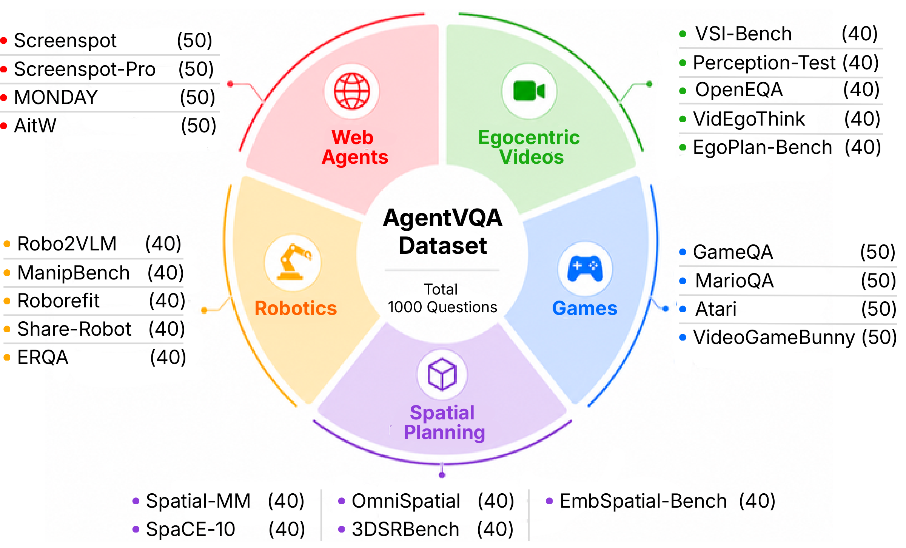

58.5%
Best reported accuracy
Gemini 3.7 Flash leads overall among 22 model configurations. No single model leads every domain.
A benchmark for visual agents
A Unified Benchmark for
Agentic Visual Understanding
Understanding a scene is only the beginning.
Can a model understand it well enough to act?
1 University of Maryland, College Park · 2 Princeton University
The benchmark
AgentVQA evaluates the visual understanding needed for goal-directed interaction: locating a button, interpreting an action, tracking a game state, or planning a route.
We bring together 23 datasets in a common multiple-choice format. Single images, image sequences, and videos preserve the original scenario, with episode goals and action histories where available.
Every domain contributes 200 questions, enabling both cross-domain comparison and a closer look at each model’s strengths and limitations.


Inside AgentVQA
23 challenging examples, handpicked from all 23 datasets. The highlighted choice is the annotated answer; model symbols show their predictions.
Examples are selected to illustrate difficult cases, not estimate model accuracy. Predictions are from saved evaluations matched to the released questions and options; coordinates may have been normalized for each model. Videos load on demand. Select an image to view it at full resolution.
Dataset curation
Models help propose difficult distractors and flag potential issues. People decide what stays—and repair what needs to change.

Manual review checks correctness, clarity, difficulty, and distractors. Each retained question is verified to have exactly one correct answer.
Headline findings
AgentVQA exposes the gap between recognizing visual content and understanding it well enough for agentic decisions.
58.5%
Gemini 3.7 Flash leads overall among 22 model configurations. No single model leads every domain.
ρ = 0.895
AgentVQA Spatial Planning tracks SpatialWorld Physical rankings across 12 shared models.
Error analysis points to grounding, motion perception, and spatial-state understanding—not just high-level reasoning.
Findings reported in the paper. Detailed scores, rank correlations, ablations, and error modes are on the Results page.
Build on AgentVQA
Use the dataset and evaluation toolkit in your research.
@misc{gupta2026agentvqa,
title={AgentVQA: A Unified Benchmark for Agentic Visual Understanding},
author={Gupta, Advait and Konan, Sachin and Sarch, Gabriel and Liu, Zhuang},
year={2026},
url={https://openreview.net/pdf?id=MQinK5xoYM}
}